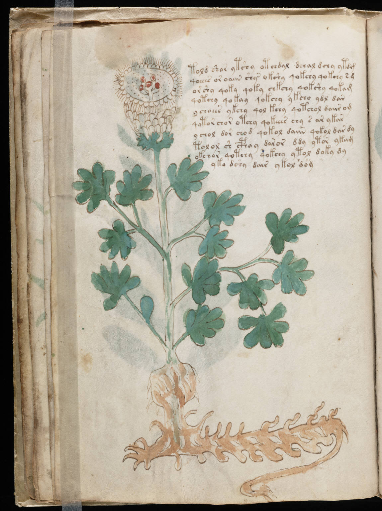

f18v
1told shar ytshy otchdal dchal dchy ytdg2qoeees or oaiin shy okshy qokchy qokchy s g3or shy qoky qoky chkchy qokshy qokam4qotchy qokay qokchy ykcho ydl dar5r ychoees ykchy qol kchy qotchol daiir om6qotor chor otchy qokeees chy s ar ykar7ychol dor chod qokol daiin qokol dar dy8tolol sh cphoy daror ddy ytor ykam9okchor qotchy qokchy ytol doky dy10yka dshy dair ykol dom
